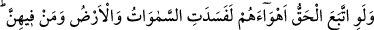
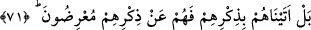

Molla Câmî’nin latîfelerinden birisi şöyledir:
Zâhidin tesbihi ihlâs cevherinden yoksundur
Ben binlerce kez onun tesbihini saydım, bir şey yoktu
Âyet, insan tarafından hoş görülmeyen bir şeyin Rahman tarafından da hoş görülmeyen
bir şey olmasını gerektirmeyeceğine delâlet etmektedir. Allah, kullarını ancak ebedî
nimetlere sevk eder. Hak Teâlâ kullarının iki dünyada maslahatlarının ancak kendisiyle
olduğu zâtıyla muâmeleye yönelişlerinin az olduğunu bilir. Onun için onlara kendisine
itâati vâcib kılmış, sevâbını ve cezâsını buna bağlamıştır. Onları vâcib kılma
zincirleriyle bu tâatlara sevk etmiştir. Çünkü onlarda kendilerini bir sebep olmadan
buna yöneltecek kadar mürüvvet yoktur. Halkın çoğunun durumu böyledir.
Mürüvvet ve safâ ehli, muhabbet ve vefâ sâhipleri ise böyle değildir. Mükellefiyet
onların ancak fiillerinde şerefi ve nâfilelerinde ziyâdeliği artırmıştır. Bir mecbûriyet
(vücûb) olmasa da onlar Hakk’a hakkıyla kulluklarını yerine getirirler, rubûbiyyetin
riâyet edilmesi gereken hürmetine riâyet ederlerdi.
Hattâ onlardan öyleleri vardır ki cennete girmek için çağrılır da Hakk’a hizmet etmek
arzusuyla bundan yüz çevirir. Bunun üzerine onların boyunlarına altından zincirler
konularak cennete girdirilirler. Peygamberimiz (a.s.)’ın şu hadîsiyle bu duruma işâret
ettiği söylenir: “Rabbiniz zincirlerle cennete sevkedilen bir topluluğa taaccüb
eder.”[90]
Yine bu hadiste bâzı hoşlanılmayan şeylerin sevilen şeylere dönüşeceğine işâret
vardır. Bazı esirleri görmez misin ki İslâm topraklarına istemeye istemeye gelirler,
sonra Allah onlara hidâyet verir, isteyerek müslüman olurlar. Böylece zincirlerle
cennete sevkolunmuş olurlar. Her hususta neticeye îtibâr edilir.
Bazıları der ki: Bir kimse sevab ve cezâyı mütâlaa edip rağbet ederek ve korkarak
müslüman olursa, kerhen müslüman olmuştur. Bir kimse de sevab ve cezâyı değil de
sevab ve ceza vereni mütâlaa edip ma‘rifet ve muhabbet dolayısıyla müslüman olursa,
isteyerek (tav‘an) müslüman olmuştur. Ehlüllah katında makbûl olan kimse odur.
Öyleyse akıllıya gereken, Kur’an’ı düşünmek ve îmanını hâlis kılmak, irfân ve yakîne,
bununla da kalmayıp müşâhede ve ıyâna ulaşmaktır. Allah Teâlâ, Rasûlü’nü hak ile
göndermiştir. “Artık haktan sonra sapıklıktan başka ne kalır?” (Yûnus, 10/32)
71. Eğer hak, onların kötü arzu ve isteklerine uysaydı, mutlaka gökler ve yer ile
bunlarda bulunanlar bozulur giderdi. Hayır, biz onlara şan ve şereflerini getirdik;
fakat onlar kendi şereflerine sırt çevirdiler.